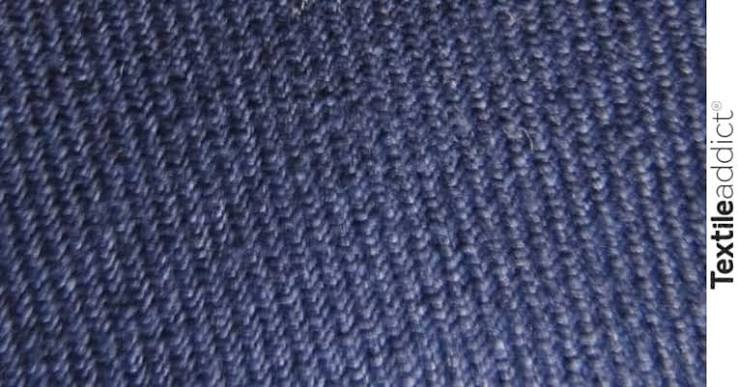

Serge de
NîmesLe tissu à l'origine du denim


⟹ Savoir-faire Emblématiques ⟸
Une armure plutôt qu’une matière. La « serge » désigne d’abord une façon de tisser : le sergé, dont les fils croisés dessinent de fines diagonales sur l’étoffe. Robuste et souple à la fois, ce tissage est connu depuis l’Antiquité et se décline en laine, en soie ou en coton.
Nîmes, cité drapière. Dès la fin du Moyen Âge puis surtout aux XVIIe et XVIIIe siècles, Nîmes devient l’un des grands centres textiles du Midi. Ses fabricants, souvent issus de la bourgeoisie protestante, produisent draps de laine, étoffes mêlées et soieries, alimentés par la laine des causses et la soie des Cévennes voisines.

Une étoffe qui voyage. La serge de Nîmes s’exporte largement, notamment vers l’Angleterre, où l’expression « serge de Nîmes » se contracte en denim dès la fin du XVIIe siècle. Le mot finit par désigner, de l’autre côté de l’Atlantique, une toile de coton sergée teinte à l’indigo.
Nîmes ou Gênes ? Le jean doit aussi son nom à Gênes (Gênes → jean), dont les ports expédiaient une toile de coton bleue appelée « bleu de Gênes ». Les historiens du textile débattent encore de la part exacte de chaque ville : la serge nîmoise d’origine était vraisemblablement un mélange de laine et de soie, bien différent du denim de coton américain.
Du bleu de travail au vêtement universel. En 1873, Levi Strauss et le tailleur Jacob Davis déposent aux États-Unis le brevet du pantalon de travail renforcé de rivets. Porté par les mineurs et les cowboys, puis par la jeunesse du XXe siècle, le denim devient le tissu le plus porté au monde, gardant dans son nom la trace de Nîmes.
Un héritage revendiqué. Après le déclin de l’industrie textile nîmoise au XIXe siècle, la ville renoue aujourd’hui avec cette histoire : collections muséales, expositions et jeunes ateliers qui relancent un jean « made in Nîmes » font vivre la mémoire de la serge.
Le passage de la serge de Nîmes au jean moderne illustre le voyage des savoir-faire textiles entre l’Europe et l’Amérique. Le mot a traversé l’Atlantique, tandis que la matière a changé : la laine et la soie nîmoises ont laissé place au coton, plus abondant et moins coûteux dans les manufactures américaines du XIXe siècle.
De Nîmes est né le denim, de Gênes le jean : deux villes méditerranéennes pour un même vêtement devenu universel.
— Histoire des mots du textileAujourd’hui encore, le vocabulaire du denim garde la mémoire de cet héritage : on parle de selvedge pour les lisières tissées sur d’anciens métiers étroits, d’indigo pour le bleu profond, et de sergé « 3/1 » pour décrire l’armure qui donne au tissu ses fameuses diagonales.
Musée du Vieux Nîmes installé dans l’ancien palais épiscopal, il évoque l’histoire de la ville et de ses industries textiles.
Arènes et Maison Carrée au cœur de la « Rome française », la Maison Carrée est inscrite au patrimoine mondial de l’UNESCO depuis 2023.
Jardins de la Fontaine et Tour Magne premiers jardins publics d’Europe, dominés par la plus ancienne tour de l’enceinte romaine.
Route de la soie cévenole vers Saint-Hippolyte-du-Fort, Anduze et Saint-Jean-du-Gard, pour découvrir l’autre grand pilier du textile gardois.